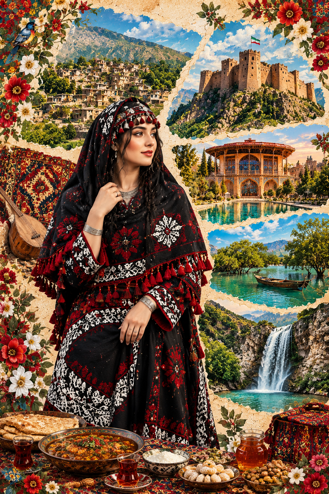
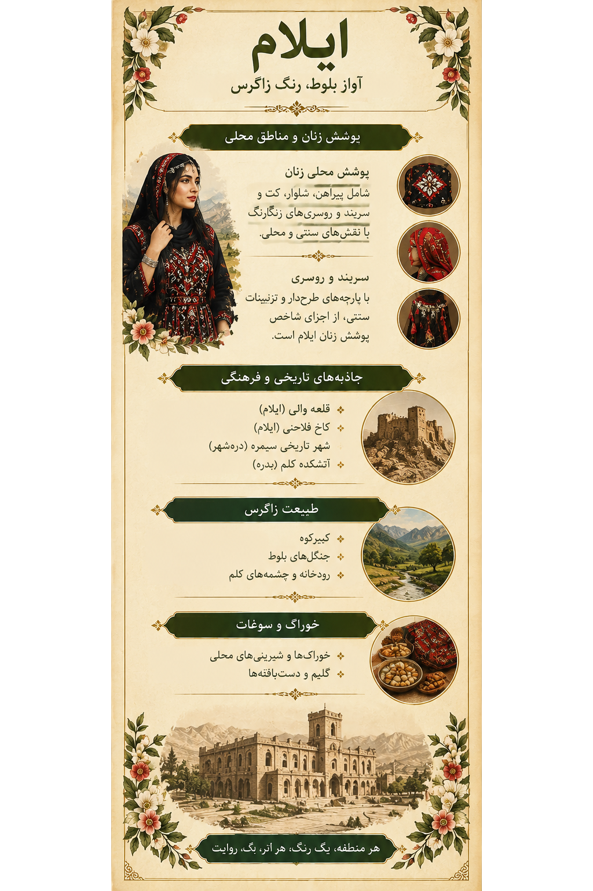

۱. تصویر ایلام؛ روایت یک سرزمین1. Ilam in Art: A Land's Story
در این اثر، پوشش زن ایلامی در کنار چشماندازهای زاگرس، بناهای تاریخی و نشانههایی از زندگی محلی قرار گرفته است. رنگها و نقشها، پیوند میان فرهنگ، طبیعت و خاطرهٔ جمعی را روایت میکنند.This artwork brings together women's dress, Zagros landscapes, historical architecture and symbols of local life. Its colors and patterns tell a story of culture, nature and collective memory.

اثر هنری ایلام از مجموعهٔ «ایران، هزار رنگ»The Ilam artwork from “Iran, A Thousand Colors”
۲. پوشش زنان ایلام؛ شکوه نقش و رنگ2. Women's Dress in Ilam: Patterns and Colors
پوشش زنان ایلام بخشی از میراث فرهنگی منطقه و فرهنگ کردیِ بخشهایی از زاگرس است. لباسها، سربندها، روسریها، پارچهها و شیوهٔ تزئین آنها ممکن است با توجه به محل زندگی، نسل و مناسبت تفاوت داشته باشند.Women's dress in Ilam is part of the region's cultural heritage and the Kurdish culture of parts of the Zagros. Garments, head coverings, fabrics and decorations may vary by locality, generation and occasion.

لیبل اختصاصی ایلام؛ راهنمای تصویری پوشش و فرهنگ منطقهIlam exhibition label: a visual guide to regional dress and culture
اجزای پوشش محلیElements of Traditional Dress
پیراهن، شلوار، سربند یا روسری و پوششهای رویی از موضوعات مهم برای بررسی پوشاک محلیاند. برای ثبت نامهای بومی و نسبتدادن هر نوع لباس به روستایی مشخص، به عکسهای مستند و روایتهای محلی نیاز داریم.Dresses, trousers, head coverings and outer garments are important topics in the study of local clothing. Documented photographs and local accounts are needed to verify traditional names and village-specific styles.
یادداشت پژوهشی: تنوع پوشش در استان نباید به یک لباس واحد یا یک شکل ثابت محدود شود.Research note: Ilam's clothing traditions should not be reduced to one garment or a single fixed style.
۳. روستاها و نواحی ایلام؛ تنوع در دل زاگرس3. Villages and Regions of Ilam
شهرها و روستاهای ایلام هرکدام جغرافیا، محصولات و روایتهای محلی خود را دارند. معرفی پوشش خاص هر روستا به پژوهش جداگانه نیاز دارد.Ilam's towns and villages each have their own landscapes, products and local stories. Identifying a particular dress tradition for each village requires further research.
کلم، بدرهKalem, Badreh
روستایی در دامنههای کبیرکوه با رودخانه، چشمهها، باغها و چشماندازهای زاگرس. بقایای تاریخی منسوب به قلعه و آتشکدهٔ کلم نیز از موضوعات بررسی میراث منطقهاند.A village on the slopes of Kabir Kouh, known for its river, springs, orchards and Zagros scenery. Remains associated with Kalem Castle and Fire Temple are also relevant to local heritage research.
درهشهرDarreh Shahr
منطقهای با پیشینهٔ تاریخی و محوطهٔ باستانی سیمره و روستاهای پیرامون.A region with a rich history, the ancient site of Seymareh and surrounding villages.
بدرهBadreh
ناحیهای کوهستانی در امتداد زاگرس با چشماندازهای طبیعی و روستاهای محلی.A mountainous area along the Zagros, with natural scenery and local villages.
ایوان و چرداولEyvan and Chardavol
از مناطق استان که برای شناخت تنوع فرهنگی، زندگی روستایی و محصولات محلی میتوان بررسیشان کرد.Areas worth exploring for cultural diversity, rural life and local products.
نام روستاها و ویژگیهای اختصاصی پوشش زنان در هر منطقه پس از بررسی منابع محلی تکمیل میشود.Village names and specific women's clothing traditions will be expanded after consulting local sources.
۴. تاریخ و معماری4. History and Architecture
قلعه والیVali Castle
از بناهای تاریخی شناختهشدهٔ شهر ایلام که در معرفی معماری و تاریخ معاصر منطقه جایگاه دارد.A well-known historic building in Ilam city, relevant to the region's architectural and modern history.
کاخ فلاحتیFalahati Palace
بنایی تاریخی در شهر ایلام که بخشی از میراث معماری منطقه بهشمار میرود.A historic building in Ilam city and part of the region's architectural heritage.
شهر تاریخی سیمرهAncient Seymareh
محوطهای باستانی در محدودهٔ درهشهر که برای شناخت تاریخ سکونت در منطقه اهمیت دارد.An archaeological site near Darreh Shahr that helps illuminate the history of settlement in the region.
آتشکدهٔ کلمKalem Fire Temple
از آثار تاریخی گزارششده در نزدیکی روستای کلم؛ جزئیات مربوط به قدمت و کاربری آن باید از منابع میراث فرهنگی تأیید شود.A historic site reported near Kalem Village. Its precise date and original function should be verified through heritage sources.
۵. طبیعت زاگرس؛ سرزمین بلوط و آب5. The Zagros: Oaks and Water
کبیرکوهKabir Kouh
رشتهکوهی شاخص در چشمانداز ایلام که با دامنهها و پوشش گیاهی زاگرس پیوند دارد.A defining mountain range in Ilam's landscape, associated with Zagros slopes and vegetation.
جنگلهای بلوطOak Woodlands
درختان بلوط از عناصر مهم طبیعت زاگرس و بخشی از هویت چشماندازی استاناند.Oak trees are an important part of the Zagros ecosystem and the province's landscape identity.
تنگه ارغوانArghavan Gorge
منطقهای طبیعی که بهویژه به خاطر چشماندازهای بهاری و درختان ارغوان شناخته میشود.A natural area known especially for spring scenery and Judas trees.
رودخانه و چشمههای کلمKalem River and Springs
آب و باغها از عناصر برجستهٔ چشمانداز روستای کلم و زندگی کشاورزی پیرامون آن هستند.Water and orchards are notable features of Kalem's landscape and surrounding rural life.
۶. طعمهای محلی ایلام6. The Flavors of Ilam
غذاها و شیرینیهای محلی بخشی از حافظهٔ خانوادگی و فرهنگ مهماننوازی ایلاماند. نامها و روش تهیه ممکن است در مناطق و خانوادههای مختلف تفاوت داشته باشند.Local dishes and sweets are part of Ilam's family memories and hospitality traditions. Names and preparation methods may vary across areas and families.
بژیبرساقBiji Barsaq
از شیرینیهای محلی شناختهشده که در منابع معرفی خوراک ایلام به آن اشاره میشود.A traditional sweet mentioned in descriptions of Ilam's local cuisine.
شلهکینهSholeh Kineh
از خوراکهای محلی منطقه که برای معرفی نهایی باید جزئیات دستور تهیه از منبع معتبر بررسی شود.A local food whose preparation details should be checked against a reliable source before final publication.
خوراکهای خانگیHome-style Dishes
خوراکهای مبتنی بر غلات، حبوبات و محصولات محلی بخشی از فرهنگ غذایی منطقهاند.Dishes using grains, legumes and local produce are part of the region's food culture.
شیرینیهای سنتیTraditional Sweets
فهرست نهایی شیرینیها با استفاده از مقالهٔ کجارو و منابع محلی تکمیل میشود.The final selection of sweets will be checked against the Kojaro article and local sources.
۷. سوغات و صنایعدستی7. Souvenirs and Handicrafts
گلیم نقشبرجستهRelief-patterned Kilim
یکی از هنرهای بافتهشدهٔ شناختهشدهٔ ایلام که نقش و بافت آن ظرفیت روایت تصویری دارد.A well-known Ilam textile craft whose patterns and weaving offer rich visual storytelling.
جاجیم و دستبافتههاJajim and Woven Textiles
دستبافتههای محلی بخشی از هنرهای کاربردی و مهارتهای سنتی منطقهاند.Local woven textiles are part of the region's traditional skills and applied arts.
محصولات باغیOrchard Products
برای معرفی دقیق محصولات شاخص هر شهرستان، از فهرست سوغات علیبابا و منابع محلی استفاده میکنیم.Alibaba's souvenir guide and local sources will help verify products associated with each district.
هنرهای بومیLocal Crafts
صنایعدستی در کنار پوشش و معماری، راهی برای شناخت مهارتها و روایتهای فرهنگی مردم منطقهاند.Alongside clothing and architecture, handicrafts offer insight into local skills and cultural stories.
۸. موسیقی و آیینها8. Music and Rituals
هوره از گونههای شناختهشدهٔ آواز در بخشهایی از زاگرس است. موسیقی و آیینهای محلی ایلام را باید با توجه به تفاوتهای ناحیهای و روایتهای مستند معرفی کرد؛ هر سنتی لزوماً در همهٔ روستاهای استان یکسان نیست.Hura is a recognized vocal tradition in parts of the Zagros. Ilam's music and rituals should be described with attention to regional variation and documented local accounts; traditions are not necessarily identical across all villages.
۹. منابع و مطالعهٔ بیشتر9. Sources and Further Reading
این منابع برای پژوهش دربارهٔ پوشاک، خوراک، صنایعدستی، روستاها و جاذبههای ایلام گردآوری شدهاند. برای جزئیات دقیق پوشش محلی، منابع مردمشناسی تخصصی و روایتهای مستند محلی نیز اهمیت دارند.These sources support research on Ilam's clothing, food, handicrafts, villages and attractions. Specialist ethnographic research and documented local accounts are also important for detailed clothing information.
- دیارلند — پوشش زنان ایلام
- علیبابا — سوغات ایلام
- بازار مینا — صنایعدستی ایلام
- ویکیپدیا — جاذبههای گردشگری استان ایلام
- ویکیپدیا — روستاهای شهرستان ایلام
- اتاقک — غذاهای محلی ایلام
- کجارو — شیرینیهای سنتی ایلام
- Encyclopaedia Iranica — Ilam
- Encyclopaedia Iranica — Clothing
- Visit Iran — Ilam Province
- IndianJournals — پژوهش پوشاک زنان ایلامی
ذکر یک منبع به معنی تأیید تکتک جزئیات این صفحه از سوی آن منبع نیست. نسبتدادن پوشش مشخص به یک گروه یا روستا نیازمند مدرک مرتبط است.Listing a source does not mean it verifies every detail on this page. Specific clothing attributions require directly relevant evidence.